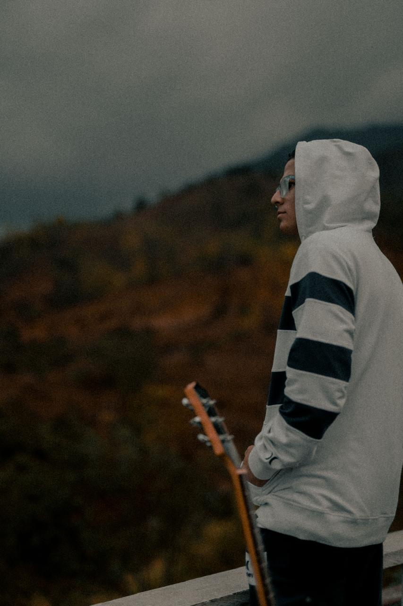
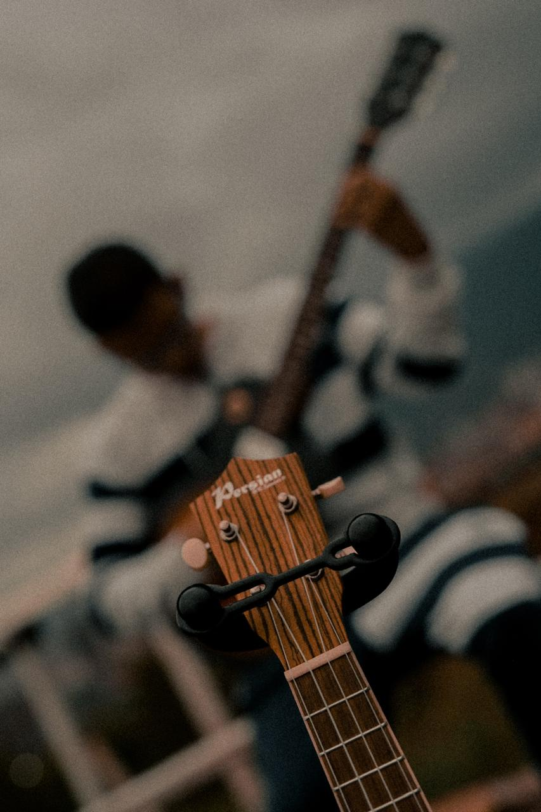
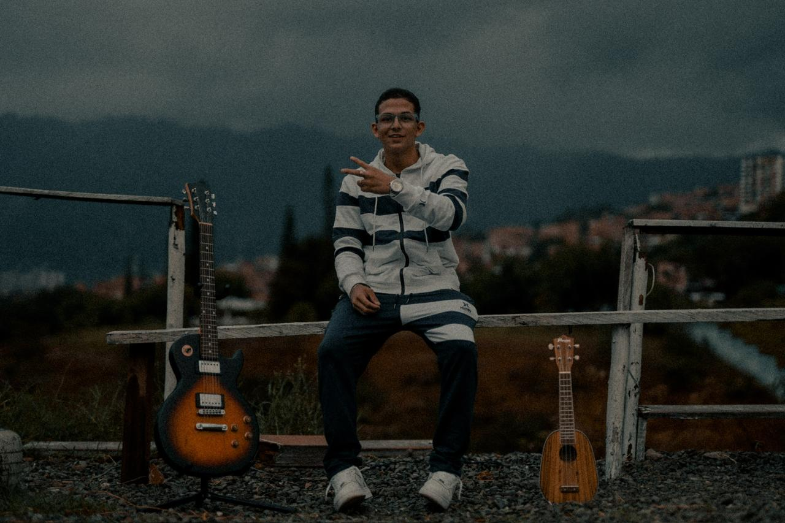
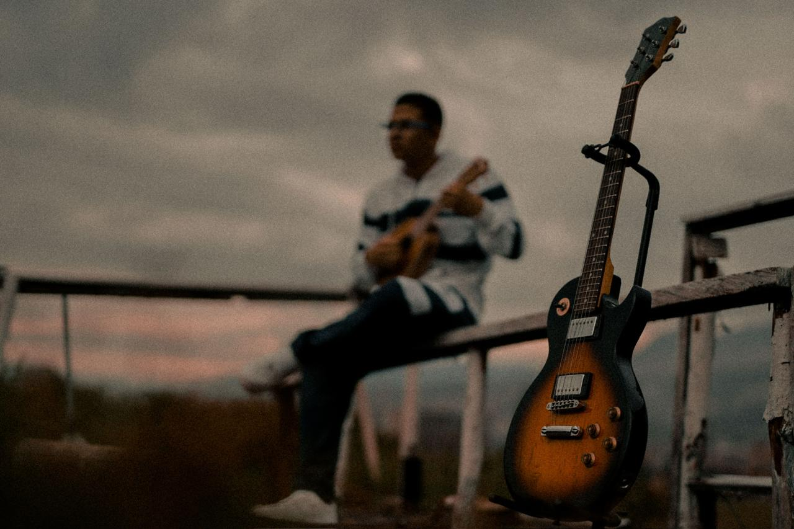
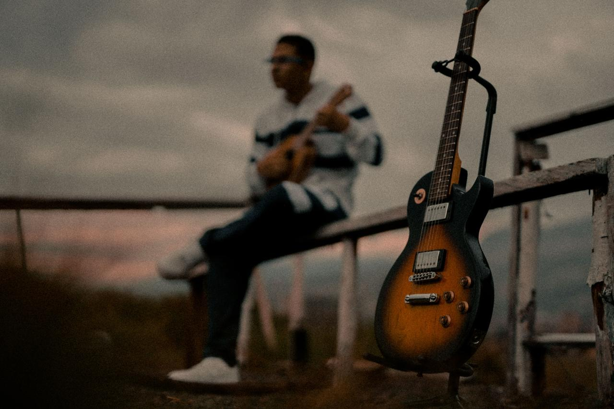

Happy Life Since 2004
Sofía Pulgarín Gómez. Nací el 20 de septiembre de 2004 en Medellín. Fui hija única hasta el año 2009, cuando llegó mi hermanita Vale. Desde ese momento mi vida comenzó a ser más feliz, porque ya tenía a alguien con quien compartirla.


Mi familia está conformada por mi mamá, Lorena Gómez, mi hermana Valentina Londoño Gómez y mi padrastro Luis Londoño. Ellos han sido una parte fundamental de mi vida y el apoyo que siempre me impulsa a seguir adelante.

Mis pasiones siempre han estado relacionadas con aprender cosas nuevas y explorar diferentes formas de expresarme. A lo largo de mi vida he participado en actividades como la natación, la música, el inglés, el modelaje y el baile.

